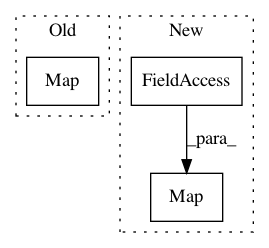

96e4af6e86e93da021c29a4273dcdfaeab8fdfcf,tensorflow_transform/beam/tft_beam_io/transform_fn_io.py,WriteTransformFn,expand,#WriteTransformFn#Any#,55
Before Change
_ = metadata | "WriteMetadata" >> beam_metadata_io.WriteMetadata(
os.path.join(self._path, "transformed_metadata"),
pipeline=saved_model_dir_pcoll.pipeline)
return saved_model_dir_pcoll | "WriteTransformFn" >> beam.Map(
_copy_tree, os.path.join(self._path, "transform_fn"))
class ReadTransformFn(beam.PTransform):
Reads a TransformFn written by WriteTransformFn.
After Change
transform_fn_path = os.path.join(self._path, "transform_fn")
write_transform_fn_done = (
saved_model_dir
| "WriteTransformFn" >> beam.Map(_copy_tree, transform_fn_path))
return (
write_transform_fn_done
In pattern: SUPERPATTERN
Frequency: 3
Non-data size: 3
Instances
Project Name: tensorflow/transform
Commit Name: 96e4af6e86e93da021c29a4273dcdfaeab8fdfcf
Time: 2017-08-07
Author: tf-transform-dev@google.com
File Name: tensorflow_transform/beam/tft_beam_io/transform_fn_io.py
Class Name: WriteTransformFn
Method Name: expand
Project Name: tensorflow/transform
Commit Name: 97507c4871dff5fb5e4bd33d2f5cf3f8bd3aceba
Time: 2020-09-01
Author: varshaan@google.com
File Name: tensorflow_transform/beam/impl.py
Class Name: _AnalyzeDatasetCommon
Method Name: expand
Project Name: rodluger/starry
Commit Name: 97110d0dfbb3fc2c6dfa7dfb0e44ffe00fbaf328
Time: 2019-12-04
Author: rodluger@gmail.com
File Name: tests/greedy/test_units.py
Class Name:
Method Name: test_unit_conversions